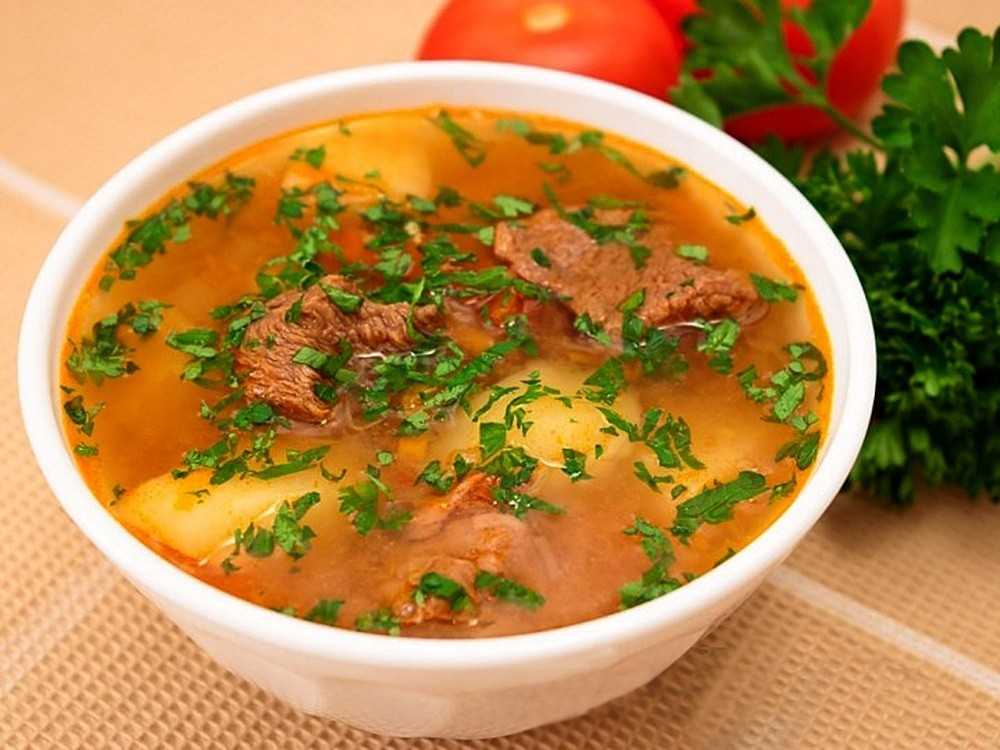

____
Традиционная еда
ШОРПО — Этот суп киргизы готовят издревле. Долго варят баранину, пока все полезные вещества не перейдут из мяса в бульон. Потом добавляют овощи: лук, морковь, картофель. С наступлением осени одним из самых популярных супов в Киргизии становится эрмен шорпо из мяса молодого козленка. С древних времен существует традиция приготовления этого блюда.

МОЛОЧНЫЕ СУПЫ — Мясные тяжелые блюда предпочтительнее есть осенью и зимой, а вот весной и летом наибольшую популярность приобретают молочные блюда и напитки. Как и другие тюркские народы, киргизы включают в свой рацион большое количество продуктов из молока, любят они и молочные супы.
ТАШ КОРДО — Это древнейшее блюдо. Возможно, в далеком прошлом, уже научившись пользоваться огнем, но еще не создав посуды, люди готовили себе пищу именно таким способом. Это блюдо воинов и кочевников. Тушу ягненка или барашка маринуют целиком с добавлением горного лука, соли и пряностей. Выкапывают яму глубиной 1-2 метра, внутри выкладывают камнями и разводят костер.
ХОШАНЫ — Хошаны очень похожи на всем известные манты. Это те же изделия из теста с рубленым фаршем, только хошаны обжариваются в масле, поэтому имеют золотистую корочку. На вкус хошаны острые, подаются с кумысом. Считается, что хошаны пришли в Киргизию из уйгурской кухни, это блюдо безумно популярно.
ЖАНСАК И БАЛМАНЫЗ — Любое застолье киргизы начинают и заканчивают чаем, а к чаю принято подавать сладости. В Киргизии принято изготавливать сладости из даров природы: орехов, фруктов, ягод и ароматного горного меда – например, жансак и балманыз. Жансак готовят из медово-ореховой смеси с добавлением топленого масла, после остывания жансак становится похожим на конфету.
____